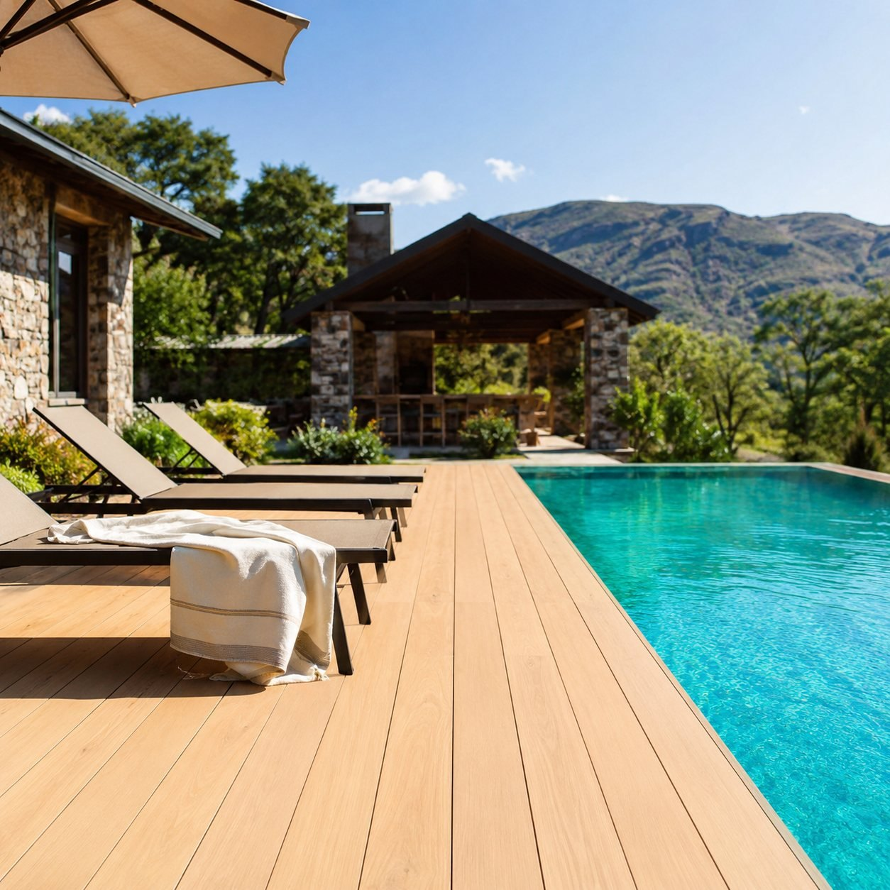
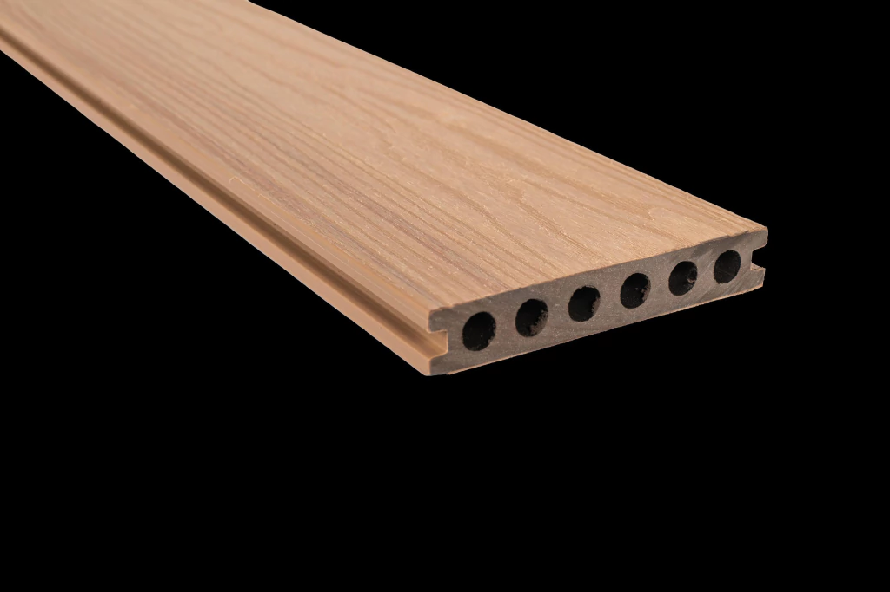
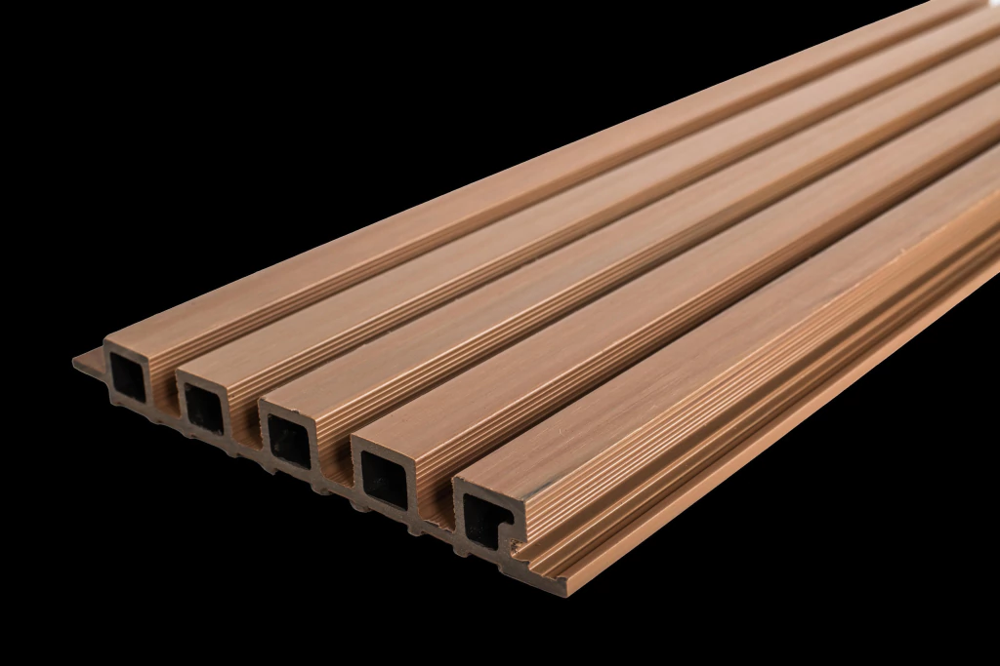
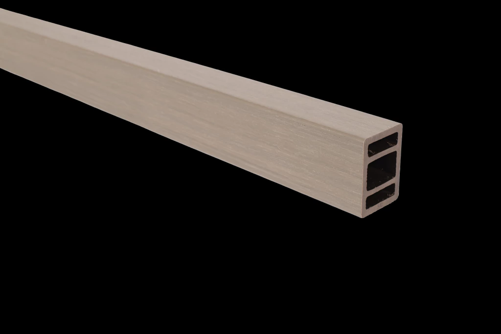
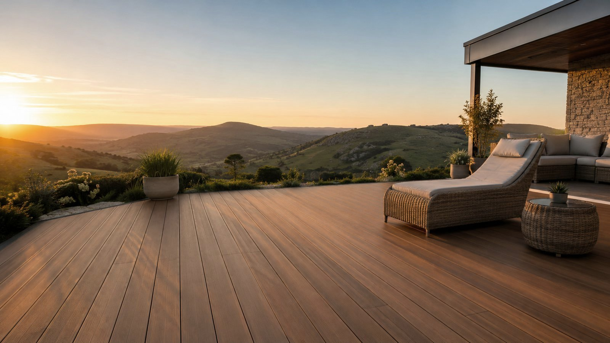

Deck, revestimientos y perfilería de madera plástica: la estética natural que buscás, con cero mantenimiento y resistencia total al clima de la sierra.
Un sistema simple de perfilería y tablas que se encastra sobre cualquier base. En una instalación queda listo — y no lo tocás nunca más.
El WPC combina fibra de madera y polímeros: la belleza de la madera, sin ninguno de sus problemas.
Fabricado con madera reciclada y plásticos recuperados. Estética natural con conciencia ambiental, sin cortar árboles.
No se pinta, no se barniza, no se sella. Se limpia con agua y jabón neutro. Y listo.
Humedad, lluvia, sol y heladas: no se pudre, no se astilla, no se deforma ni pierde color.
No es alimento para insectos ni hongos. La plaga que arruina la madera real, acá no existe.
Lo que cambia cuando dejás de pelear con la madera todos los años.
Del piso del quincho a la fachada de tu casa. Distintos perfiles y colores de madera.

Para pisos de exterior: galerías, bordes de pileta, quinchos y balcones. Antideslizante y siempre fresco al pie.
Ver precio y calcular →
Revestimiento de paredes interiores y fachadas. Transforma un ambiente con la calidez de la madera y sin obra pesada.
Ver precio y calcular →
Perfiles 60×42 y 42×22 para pérgolas, cerramientos y cielorrasos: montá tu proyecto completo con el mismo sistema.
Ver precio y calcular →Seis tonos inspirados en la flora argentina, con stock permanente. Estables al sol: no se decoloran.
*Los tonos en pantalla son orientativos. Consultanos por las muestras físicas.
Escribinos por WhatsApp con los metros aproximados y una foto del lugar. Te asesoramos sin compromiso.
Te pasamos precio cerrado, opciones de terminación y todo lo que necesitás para el proyecto completo.
Coordinamos la entrega en Tandil. El sistema se monta rápido y no lo mantenés nunca más.

Vida útil estimada de +25 años. Mantenimiento: limpieza ocasional con agua, jabón neutro y cepillo de cerdas blandas. No requiere pintura, barniz ni sellador nunca.
El deck tiene terminación antideslizante y disipa mejor el calor que otras alternativas sintéticas. Para zonas de mucho sol se recomiendan los tonos claros.
Te damos asesoramiento, medición y todo el sistema de perfilería para una instalación simple. Coordinamos la mejor opción para tu proyecto en Tandil.
Depende de los metros y la terminación. Escribinos por WhatsApp con la medida aproximada y una foto del lugar y te pasamos precio cerrado a la brevedad.
Sí. El deck es para pisos de exterior; los wall panels sirven para revestir paredes de interior y fachadas. Todo con el mismo sistema.
Mandanos los metros aproximados y una foto del lugar, y te pasamos precio y colores. Sin compromiso.
Escribinos por WhatsApp →